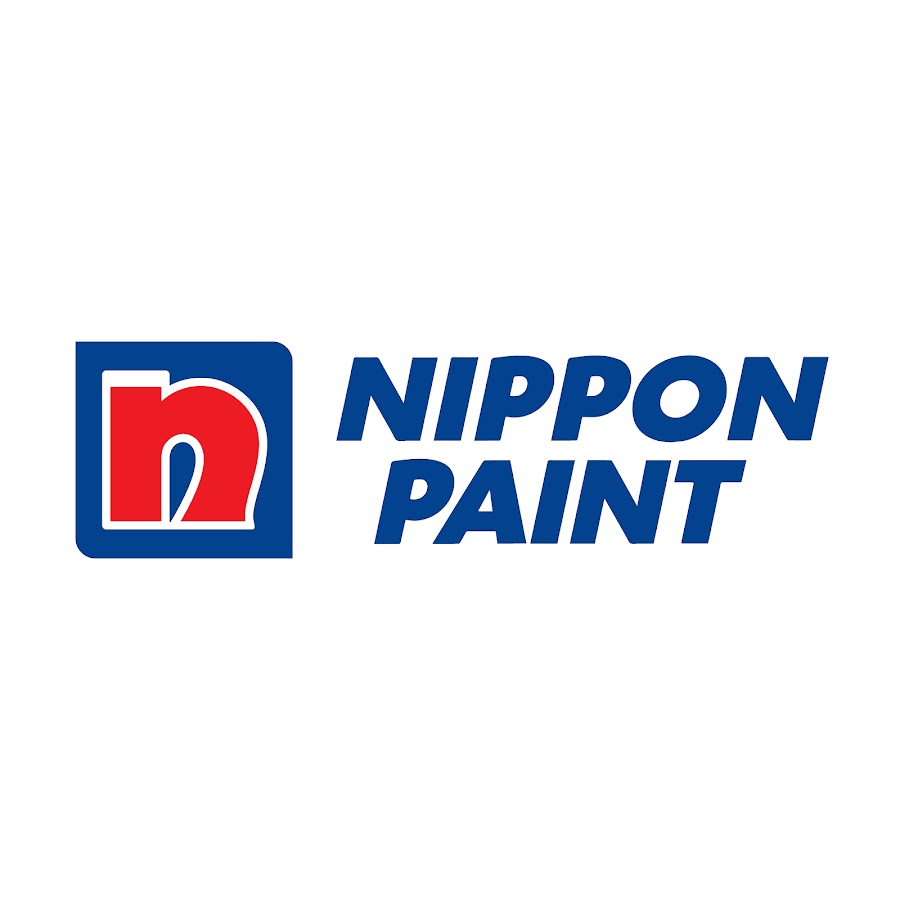

|  |
K E R J A
Nippon PaintAda banyak hal yang membuat saya tertarik dan terus bersemangat saat bekerja di Nippon Paint. Saya merasa diterima dengan baik oleh rekan-rekan kerja dan selalu didorong untuk berkontribusi secara aktif dalam tim. Selain itu, Nippon Paint memberikan kesempatan yang luar biasa untuk terlibat dalam berbagai proyek yang menantang dan bervariasi. Setiap proyek membawa tantangan baru dan peluang untuk belajar serta mengembangkan keterampilan baru. Ini membuat saya merasa selalu terpacu untuk memberikan yang terbaik dan terus berkembang di tempat kerja. Salah satu hal yang paling menarik bagi saya tentang bekerja di Nippon Paint adalah fokus pada bidang marketing. Kami selalu didorong untuk mencapai target penjualan. Ini memberi saya kesempatan untuk terus berkembang dan memberikan kontribusi yang berarti dalam memajukan perusahaan. Selain itu, Nippon Paint adalah perusahaan yang peduli terhadap kesejahteraan karyawan. Mereka menyediakan berbagai program pengembangan diri dan kesejahteraan yang dirancang untuk membantu karyawan mencapai potensi terbaik. Ini termasuk pelatihan, program kesehatan, dan berbagai insentif lainnya yang membuat lingkungan kerja menjadi lebih menyenangkan dan produktif. Yang paling penting, bekerja di Nippon Paint memberi saya kesempatan untuk menjadi bagian dari sebuah tim yang berdedikasi dan bersemangat. Kami bekerja bersama-sama untuk mencapai tujuan bersama dan menciptakan dampak positif dalam industri cat. Secara keseluruhan, peluang untuk berkembang, fokus pada inovasi, perhatian terhadap kesejahteraan karyawan, dan semangat tim yang kuat membuat saya tetap tertarik dan bersemangat saat bekerja di Nippon Paint. Saya merasa sangat bersyukur atas kesempatan ini dan berharap untuk terus berkembang dan memberikan kontribusi yang berarti bagi perusahaan ini. Kembali |